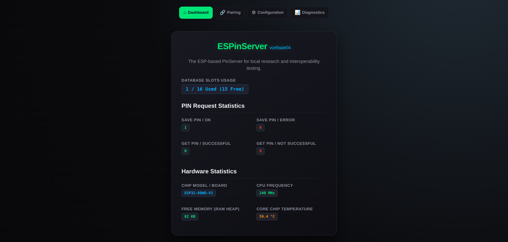
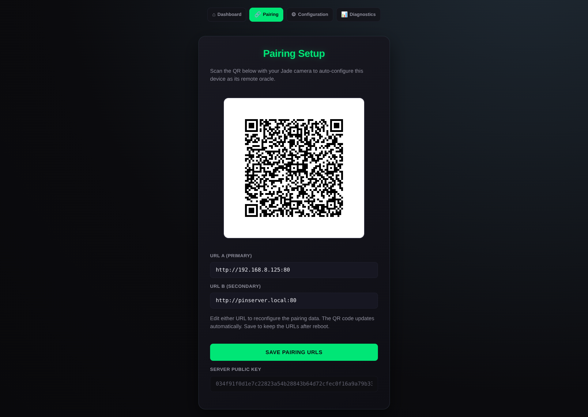
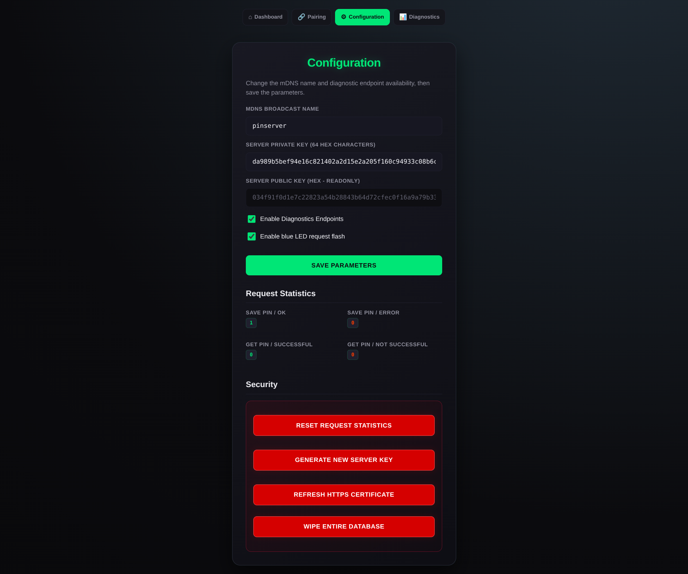
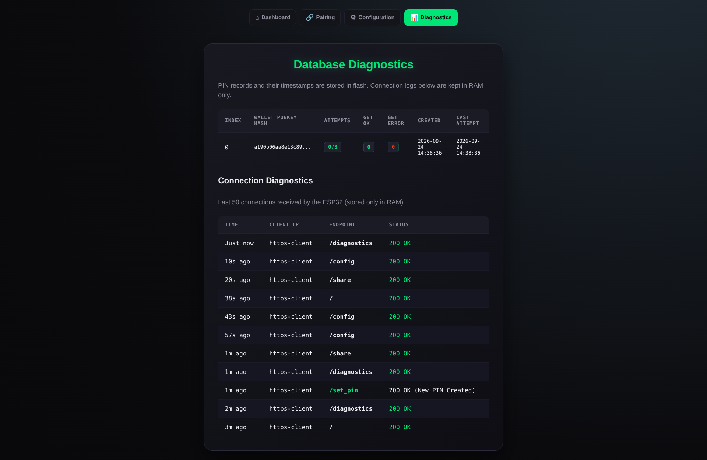

What the firmware provides
ESPinServer creates a local PIN-server endpoint for Blockstream Jade interoperability testing. Configuration pages are served over HTTPS on port 443. The Jade-compatible /set_pin and /get_pin API remains on HTTP port 80; other HTTP paths redirect to HTTPS.
On first boot, the ESP32 generates a self-signed certificate and stores it in NVS. The browser will show a trust warning until the certificate is accepted. The PIN database stays locked until its storage password is entered after Wi-Fi activation.
Get started
Build, flash, connect to Wi-Fi, unlock the database, and pair a Jade.
Protocol
Understand the request framing, encryption, PIN flow, and replay protection.
Security model
Learn what this implementation protects and what it intentionally does not.
Firmware interface
The browser interface is organized as a small local dashboard:
- Dashboard: PIN database capacity, request counters, and ESP32 hardware statistics.
- Pairing: QR code, primary and secondary API URLs, and the server public key for Jade.
- Configuration: mDNS name, server key, diagnostics and LED settings, statistics reset, certificate refresh, key generation, and database wipe.
- Diagnostics: PIN-record metadata and recent connection logs held in RAM.
Interface screenshots



